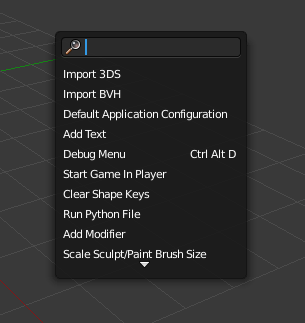
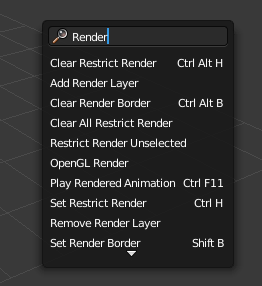
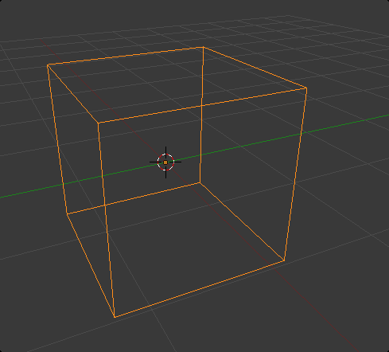
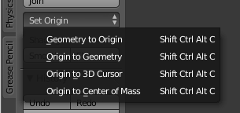
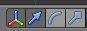
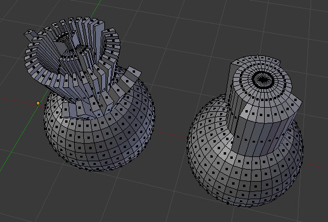
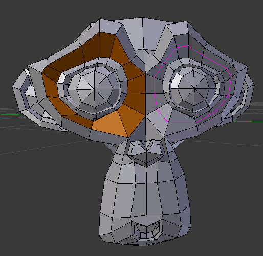

As principais ferramentas e operações úteis para modelação são várias e estão disponíveis em diferentes locais ou em diferentes modos. A barra de ferramentas (lado esquerdo do editor 3D View) apresenta diferentes abas que permitem acesso a várias ferramemtas. Os menus em baixo permitem acesso ainda a mais opções.
Deverá ter em atenção que as opções e ferramentas em Edit Mode são diferentes das disponíveis em Object Mode.
Finalmente, o menu Specials, acedido através da tecla W, e a janela de pesquisa, acedida através da barra de espaços, são também extremamente úteis durante a modelação.
 Adicionar novos objetos é feito através do atalho Shift+A ou da aba Create (disponível na barra de ferramentas). Contudo, é preciso atentar ao modo de trabalho em que se encontra.
Se estiver em Object Mode, ao utilizar o atalho ou a aba irá criar um novo objeto. No entanto, se estiver em Edit Mode, a malha adicionada fará parte do objeto onde ativou o Edit Mode. Por outras palavras, não adiciona um novo objeto, adiciona mais malha ao objeto já existente.
O cursor 3D (tem o aspeto de um alvo) marca o local onde serão adicionados os novos elementos (objetos ou malha).
Claro está que existem diversos outros modos de introduzir mais vértices/arestas/faces. Mais abaixo são apresentados alguns do mais comuns (subdivisão, extrusão).
Para apagar pode utilizar Del ou X.
Permitem operações diferentes e utilizam ferramentas diferentes.
Todos os objetos inseridos no Blender possuem uma origem (Origin). Em versões anteriores, a Origin era designada por Centro. No momento em que adicionamos um objeto, o ponto mediano entre os vértices que constituem o objeto torna-se na Origin do novo objeto. A Origin está representada por um ponto laranja no meio do objeto.
Se estiver em Edit Mode e mover todos os vértices de um objeto, a Origin não vai ser alterada e vai permanecer no mesmo local.
A Origin de um objeto pode ser manipulada através do botão Origin no painel de ferramentas. As opções são claras: na primeira opção, os vértices do objeto vão deslocar-se até à Origin; na segunda, a Origin vai ser deslocada para o centro do objeto (calcula o centro com base na geometria); na terceira, a Origin vai para onde estiver o 3D Cursor; na última, move a Origin para o centro calculado da massa do objeto.
A forma mais simples de selecionar um objeto ou um vértice é clicando nele com botão direito do rato (BDR). Para selecionar os vértices ou as faces de um objeto, terá primeiro de selecionar o objeto e ativar o modo de edição (por exemplo, utilizando a tecla TAB).
Pode utilizar a tecla A para selecionar ou retirar a seleção de tudo. Ou seja, se estiver em modo de objeto e clicar na tecla A seleciona todos os objetos existentes. Se estiver em modo de edição, seleciona todos os vértices, arestas ou faces que constituem o objeto.
A tecla B serve para ativar a seleção por caixa (Box) e a tecla C serve para ativar a seleção por círculo (Circle). Neste último caso, pode utilizar a roda do rato para reduzir ou aumentar o círculo de seleção. Para selecionar objetos, vértices, arestas ou faces que não sejam adjacentes (e portanto, não pode utilizar a seleção por caixa...) utilize o Shift e clique com o BDR.
Para utilizar a seleção por laço, clique no Ctrl e no botão esquerdo do rato (BER). Sem largar o BER, desenhe o laço, selecionado todos os objetos (em Objet Mode) ou vértices/arestas/faces (Edit Mode) que ficarem inseridos no mesmo.
Em Edit Mode pode ainda utilizar outras ferramentas de seleção:
As teclas G, R e S servem para aGarrar (para deslocar no espaço), Rodar e eScalar (alterar a dimensão) do que estiver selecionado. Ou seja, se estiver em modo objeto, aplica as modificações ao objeto como um todo. Se estiver em modo edição, aplica as modificações aos vértices, arestas ou faces selecionados.
Em vez destas teclas, pode utilizar os manipuladores para os mesmos fins.
Se desejar, pode bloquear as operações aos eixos X, Y e Z e introduzir valores numéricos exatos. Por exemplo, se clicar na sequência de teclas G, Z, 2, o objeto irá deslocar-se no eixo Z em 2 unidades. Se clicar em R, Z, 45, o objeto irá rodar 45º sobre o eixo Z.
Se pretende maior controlo nas operações mas não pretende introduzir valores numéricos, pode utilizar as teclas Ctrl, Ctrl+Shift e Shift para obter maior precisão.
Também pode introduzir os valores numéricos desejados diretamente na barra de propriedades do 3D View (tecla de atalho é N).
Para criar uma relação de parentesco (child-parent), clique em SHIFT e selecione os vários objetos (o último selecionado será o pai), clique em CTRL+P. Agora, o que fizer ao “pai” também se aplica aos filhos (se mover o “pai”, os filhos irão atrás, etc.).
Para desfazer, selecione os filhos que pretende tornar orfãos e ALT+P.
Grupos é uma forma de associar objetos sem que estes tenham alguma relação hierárquica entre si (como no parentesco). Pode criar grupos e adicionar/remover objetos a um grupo de diversas formas. Pode utilizar CTRL+G para associar um objeto a um novo grupo e pode utilizar as opções disponíveis na aba Relations (barra de ferramentas) ou utilizar o painel Object do editor Properties para gerir os grupos.
Em modo Object, selecione os objetos que pretende unir (Join) e prima Ctrl+J.
Em modo Edit, para criar mais vértices, arestas ou faces, selecione o que pretende dividir e prima W (Subdivide), utilize a faca (Knife) para riscar a linha de corte com a tecla K ou crie Loop Cuts (CTRL+R). Estas opções são descritas abaixo.
Para Fundir (merge) faces, vértices ou arestas: seleccione e ALT+M ou prima W, opção Merge. Para apagar pode utilizar Del ou X.
Ainda em Edit Mode, existem diversas outras formas úteis de separar. Pode separar vértices, arestas ou faces, criando novos objectos (selecione o que pretende separar e clique em P) ou desligando (rip) (selecione o que pretende desligar e clique em V ou utilize o menu Mesh).
Para completar (criar faces) e Preencher: se selecionar 2 vértices e clicar em F cria uma nova aresta, se tiver arestas seleccionadas cria uma face. Se tiver 4 vértices seleccionados, cria uma face.
Se tiver uma área para preencher com diversos vértices, pode pressionar F (criando um única face com vários vértices), Alt+F ( preenchendo com várias faces) ou unir duas sequências de vértices criando faces entre elas através de W, opção Bridge Edge Loops.
SHIFT+D duplica o objeto original. Ficamos com dois objectos totalmente independentes.
ALT+D clona o objeto original mas os dois objetos não são totalmente independentes. Se depois editarmos a malha (por exemplo, mover um vértice), a ação irá ser aplicada em ambos os objetos.
a. Em Edit Mode, selecione as linhas (não é possível subdividir um vértice…) ou lados que pretende subdividir e clique em W (menu Specials) para cortar ao meio o que estiver selecionado (também pode utilizar o botão Subdivide na barra de ferramentas).
Na barra de ferramentas deverão surgir várias opções de configuração que permitem definir número de subdivisões, grau de suavização (Smooth), etc.
Tal como podemos dividir um objeto sólido, também é possível dividir curvas ou superfícies NURBS.
É possível fazer extrusão a vértices, arestas ou faces. Em Edit Mode, selecione o que pretende estender e clique em E (pode utilizar botão na barra de ferramentas).
Também é possível, utilizar a extrusão para criar faces. Faça extrusão e depois clique no botão direito do rato (sem mexer!). É criada uma nova “camada”, depois clique em S , nova extrusão e desloque em Z. O efeito é similar a utilizar a ferramenta Inset Faces (disponível no atalho I ou no menu W).
Quando se faz extrusão, também pode optar entre Individual ou Region.
 Diferença entre Extrude Individual e Extrude Region
Existem diversas formas de suavizar/arredondar as formas ou o aspeto. Importa referir que estas últimas não modificam a geometria, apenas alteram o aspeto na renderização, comportamento em relação à luz.
Em Edit Mode (para aplicar apenas a algumas faces) pode ser ativado via menu W (Shade Smooth ou Shade Flat - aspeto arredondado ou aspeto liso/plano) ou através da barra de ferramentas, aba Shading/UVs
Em Object Mode, aplica o aspeto a todo o objeto (via barra de ferramentas, aba Tools).
Pode utilizar o modifier ou a ferramenta disponível no menu W (em Edit Mode).
Em Edit Mode, na barra de ferramentas (Smooth Vertex) ou via menu W (Smooth), pode aplicar o Smooth aos vértices selecionado, arredondando a forma.
A opção Subdivide Smooth (menu W) permite subdividir e introduz logo um fator de Smooth.
É a ferramenta utilizada em Objetos para um cenário.
A ferramenta apresenta um menu que permite escolher o perfil ou tipo de curva e pode ser utilizada em Object ou em Edit Mode
Deverá ter em atenção ao raio de selecção (círculo cinzento) que pode aumentar/diminuir com roda do rato.
A Knife (faca) é uma forma de inserir vértices ou criar novas faces.
Pode ativar a ferramenta via K ou botão na barra de ferramentas. Depois, deve clicar no local das arestas onde pretende inserir vértices (criando cortes).
Se clicar no CTRL tranca a Knife ao Midpoint, o corte será efetuado no meio da aresta. Se clicar no C tranca a Knife aos ângulos.
A Loop Cut permite criar um corte em todas as faces que estão ligadas.
